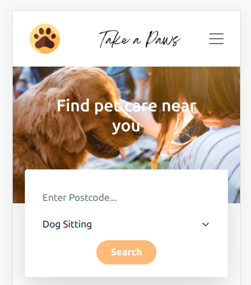

Take A Paws
For the final Northcoders group project, we created an app to put pet owners in touch with pet professionals. This was built using ReactJS and Firebase9 and features a chat function to quickly establish contact with a professional, and map functionality to show which service providers are nearest to you. The github repo for this project can be found here .
NC News
This solo project is an online news service which allows users to browse articles, filter by subject as well as vote and comment on each article. The back-end API uses Express and SQL. The front-end uses ReactJS and Axios.
Back end: github repo, hosted API
Front end: github repo, hosted site